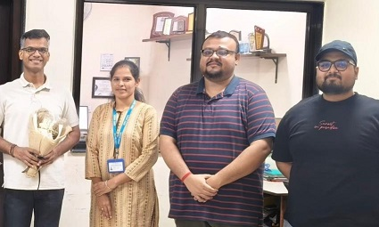

DATAMODELHEALTH
AI · PUBLIC HEALTH
Predictive modelling for health systems
Exploring statistical, machine-learning, and ensemble approaches to improve forecasting and decision support.
Project overview →INTERDISCIPLINARY HEALTH RESEARCH
We connect occupational and environmental health with data science, laboratory innovation, and evidence synthesis to answer important questions about health and work.

OUR APPROACH
From population-level studies to predictive modelling and diagnostic innovation, our work aims to translate rigorous methods into useful evidence for healthier workplaces and communities.
Discover our research areas →WHAT WE STUDY
A connected approach to complex health challenges.
Work-related health, exposure assessment, worker health, and environmental determinants.
Explore area → 02 / PREDICTIONPredictive modelling, forecasting, explainable algorithms, and responsible AI for health.
Explore area → 03 / INFERENCESurvey analysis, statistical methods, systematic reviews, meta-analysis, and reproducible research.
Explore area → 04 / PREDICTIVE BIOLOGYApplying machine learning and statistical consensus to Predictive Toxicomicrobiomics for the discovery of occupational health biomarkers.
Explore area → 05 / BIOLOGYBiomarkers, heavy-metal exposure, and data-driven approaches to population health.
Explore area → 06 / METHODSRobust study design, computational workflows, and transparent analytical practice.
Explore area →SELECTED WORK
AI · PUBLIC HEALTH
Exploring statistical, machine-learning, and ensemble approaches to improve forecasting and decision support.
Project overview →OCCUPATIONAL · MICROBIOME · AI
Applying machine learning and statistical consensus to Predictive Toxicomicrobiomics for the discovery of occupational health biomarkers.
Project overview →OCCUPATIONAL · ENVIRONMENTAL
Using population-based data to understand exposures, health outcomes, and differences across groups.
Project overview →OUR RESEARCH PRINCIPLES
Sound methods, transparent analysis, and careful interpretation.
Bringing disciplines together to tackle complex health questions.
Research designed to inform practice, policy, and future discovery.
UPDATES
Updates on research in occupational health, AI for public health, and diagnostic innovation.
Selected papers, preprints, and research resources will be added here.
For research collaboration and academic enquiries, please use the contact page.
LET'S CONNECT